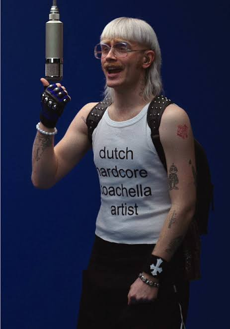

мій любимий исполнитель це йост клейн
знизу ви можете бачить
- його зовуть йост клейн і він з 🇳🇱
- йому 28 років і він народився 10 листопада 1997 року.
- він почав у 12 років створив популярний YouTube-канал EenhoornJoost.
- його трек Friesenjung у 2023 році став хітом №1 у Німеччині та Австрії.
- його Пісня Europapa встановила абсолютний рекорд у Нідерландах на Spotify, набравши 2,5 мільйони стрімів за один день.
Перейти до альбому
перейти до альбому :)
Найпопулярніші пісні
- 1. Friesenjung
- 2. Europapa
- 3. Ome Robert
- 4. Luchtballon
- 5. Wachtmuziek